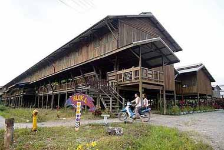
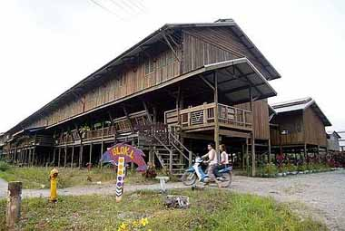
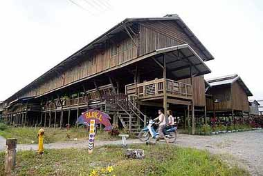

Gallery
 


Explore the rich heritage, customs, and way of life of one of Sarawak’s highland communities.
Start ExploringThe Lubawang people, also known as Lun Bawang, are an indigenous ethnic group native to the northern highlands of Sarawak, mainly in the Lawas and Limbang districts. They are part of the larger Dayak community and share close cultural ties with the Kelabit and Murut groups.
The Lubawang speak the Lun Bawang language, which belongs to the Austronesian family. Traditionally, they lived in longhouses and practiced wet-rice farming, hunting, and fishing in the lush highland valleys.
The Lubawang are known for their strong community values and colorful traditional attire. Their clothing often features intricate beadwork and woven textiles that reflect their identity and creativity.
One of the most important celebrations is the Irau Aco Lun Bawang, or the Lubawang Festival — a joyful annual event where the community gathers to celebrate their heritage through dancing, singing, and sports.
Respect for elders, cooperation, and hospitality are central to their social life. Visitors are often warmly welcomed into their homes with food and stories.
Food is an essential part of Lubawang culture. Their traditional dishes are rich in natural flavors and are often prepared using bamboo and leaves.
Many Lubawang families continue to farm rice, grow vegetables, and raise livestock, while maintaining a deep connection with nature.
Traditional music plays a big role in ceremonies and festivals. The Lubawang use bamboo flutes, gongs, and drums to accompany their songs and dances.
Their folk dances express joy and community spirit, performed during weddings and harvest celebrations. Songs are often passed down through generations, keeping their oral traditions alive.

Interested in discovering more about the Lubawang and other indigenous peoples of Borneo?